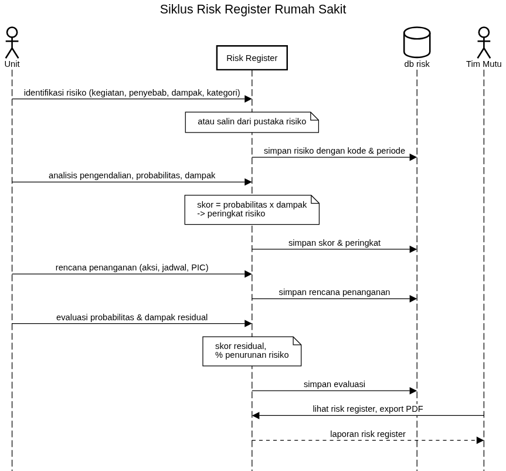
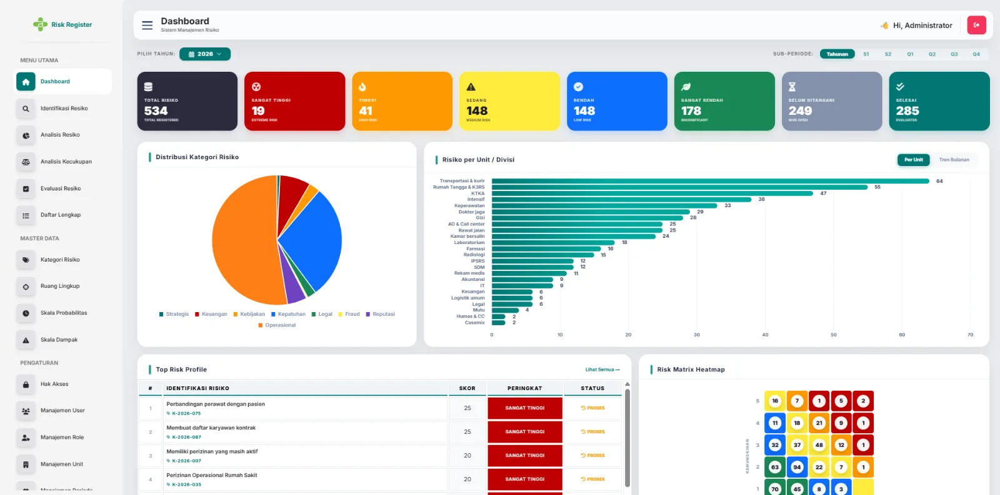
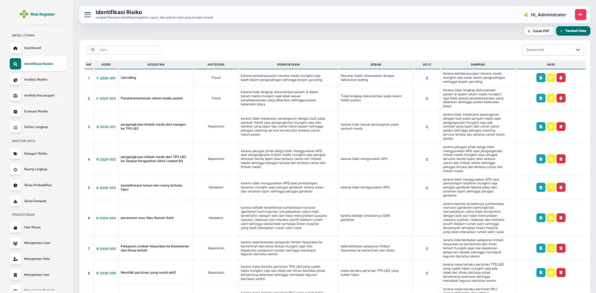
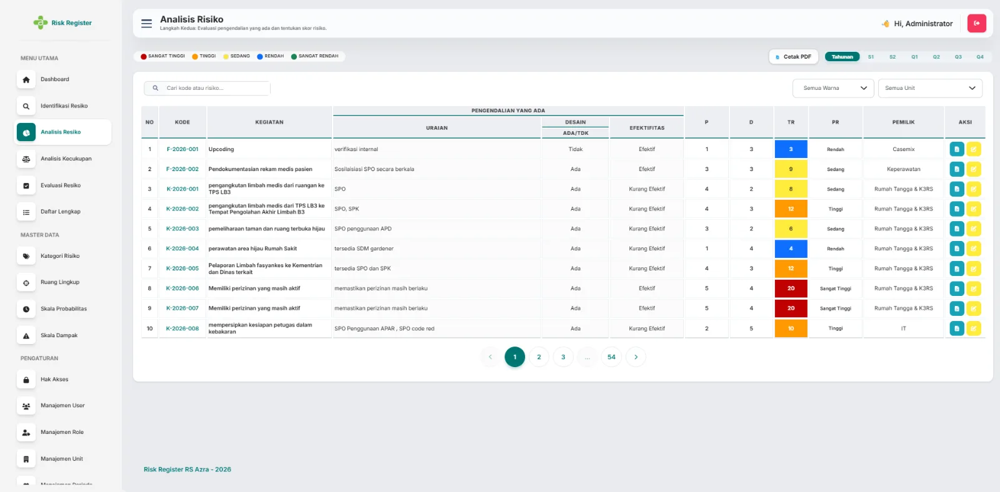
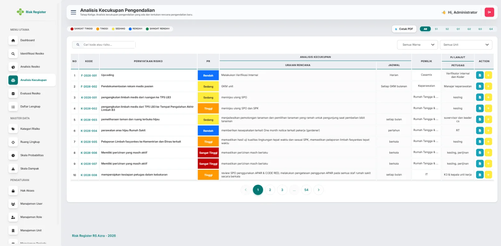
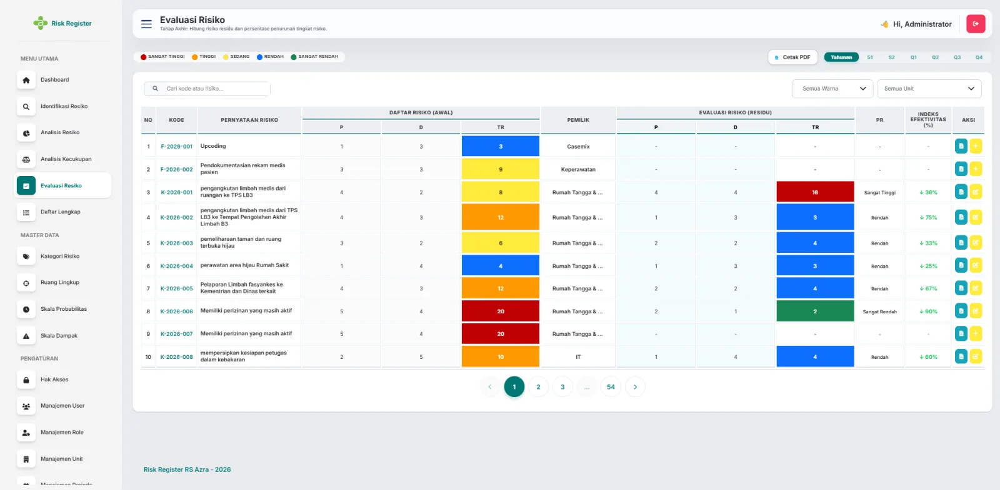
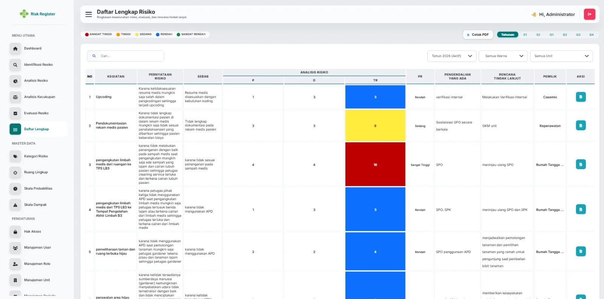

Risk Register
Mengubah risk register rumah sakit yang berbasis spreadsheet menjadi sistem yang mengikuti siklus risiko lengkap: identifikasi, analisis, rencana penanganan, dan evaluasi.
01Konteks & Masalah
Setiap unit mencatat risk register di spreadsheet besar dengan banyak kolom: kegiatan, tujuan, pernyataan risiko, penyebab, pengendalian yang ada, probabilitas, dampak, tingkat risiko, rencana penanganan, jadwal, pemilik risiko, dan penanggung jawab tindak lanjut.
Tugas saya menerjemahkan spreadsheet itu menjadi sistem yang terstruktur: memisahkan langkah yang terjadi di waktu berbeda, menjaga penilaian tetap konsisten antar-unit, dan menghasilkan register yang sama dalam bentuk laporan.
02Analisis: dari spreadsheet ke proses
Spreadsheet itu mencampur empat kegiatan yang dilakukan di waktu berbeda. Saya memisahkannya menjadi empat tahap, masing-masing dengan layar dan tabel sendiri:
| Tahap | Yang dicatat | Output |
|---|---|---|
| 1. Identifikasi | Kegiatan, tujuan, pernyataan risiko, penyebab, dampak, kategori, ruang lingkup, dapat / tidak dapat dikendalikan | Risiko dengan kode, per periode |
| 2. Analisis | Pengendalian yang ada (uraian, desain, efektivitas), probabilitas, dampak | Skor dan peringkat risiko |
| 3. Kecukupan & penanganan | Rencana penanganan, jadwal, penanggung jawab | Rencana aksi |
| 4. Evaluasi | Probabilitas dan dampak residual, insiden | Skor residual, % penurunan risiko |
03Kebutuhan Utama
- Penilaian konsisten: probabilitas dan dampak diambil dari tabel master (nilai, warna, uraian dampak per area), sehingga setiap unit menilai risiko dengan cara yang sama.
- Pustaka risiko: unit bisa menyalin risiko umum dari pustaka tanpa mengetik ulang.
- Periode: risiko terikat pada periode dan triwulan; frekuensi pelaporan dicatat per risiko.
- Akses berbasis role per menu, dikelola administrator.
- Laporan: risk register, analisis kecukupan, evaluasi, dan profil satu risiko, semuanya bisa di-export ke PDF.
04Desain

Penilaian
Setelah penanganan, perhitungan yang sama dengan probabilitas dan dampak residual menghasilkan skor residual, dan sistem menampilkan persentase penurunan risiko.
05Tampilan






